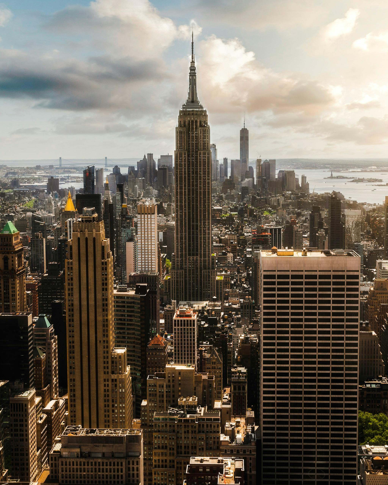
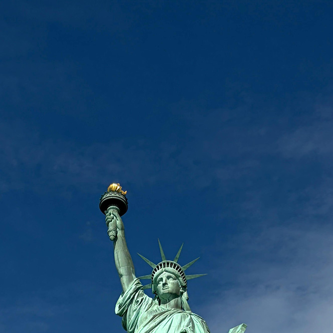
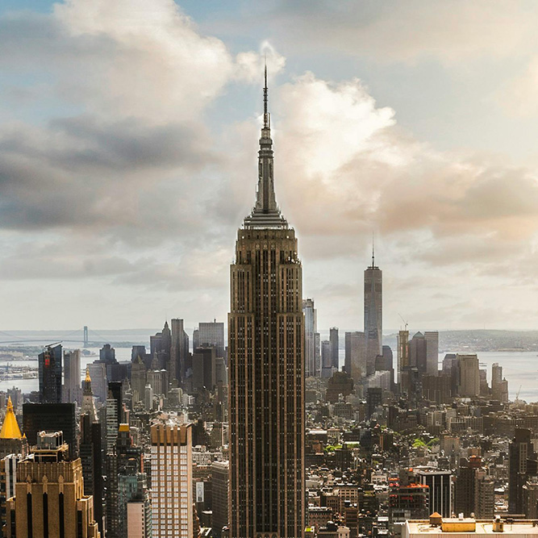
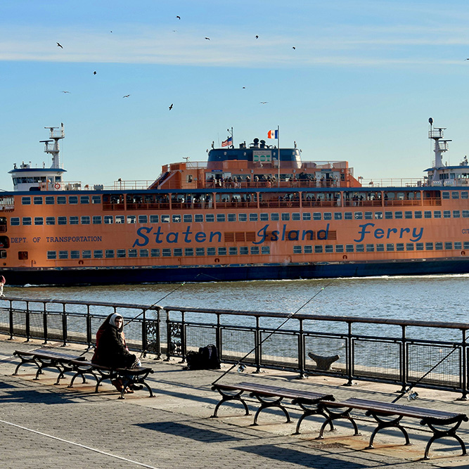
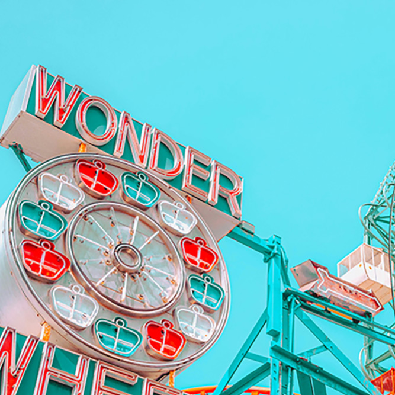
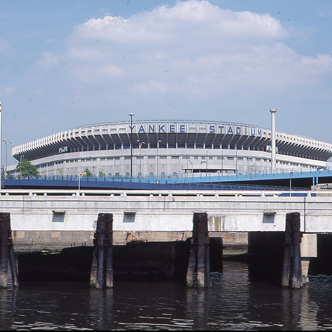
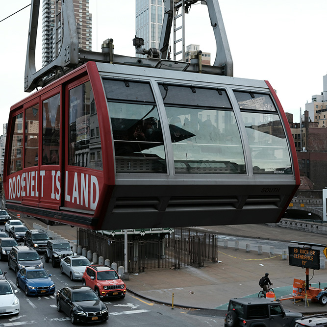

NYC Landmarks Virtual Tour
This site highlights some interesting landmarks across New York City's five boroughs.
New York City is filled with landmarks, tourist attractions and historic sites dating from before it was known as New York City to more recent additions. Click through this site to explore!
Featured Landmark: Empire State Building

The Empire State Building is one of New York City's most famous landmarks. Located in Manhattan, it opened in 1931 and stands 1,454 feet tall, including its antenna.
Visitors can enjoy beautiful views of New York City from its observation decks. The building is famous for its Art Deco architecture and the colorful lights that illuminate the skyline at night.

Statue of Liberty

Empire State Building

Staten Island Ferry

Wonder Wheel ferris wheel at Coney Island

Yankee Stadium
